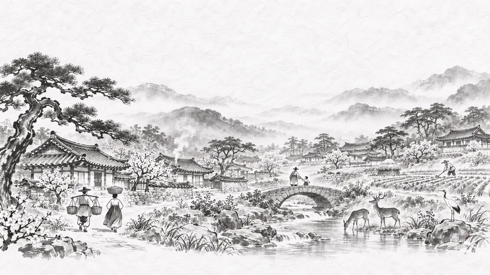
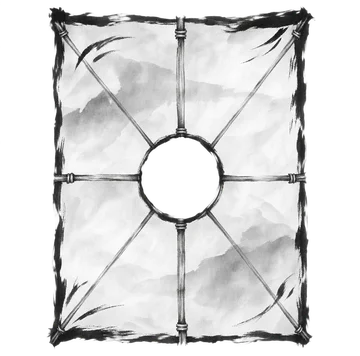
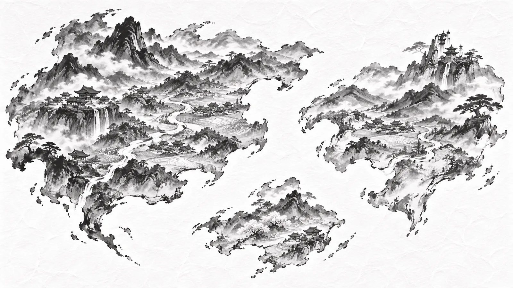
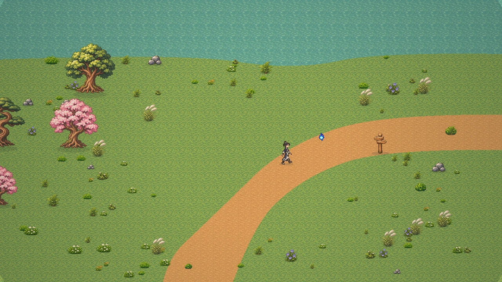
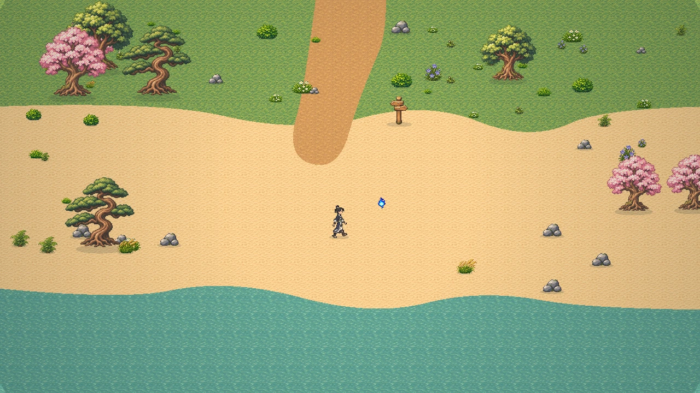

걸어서 그리는 백지 지도
걸은 길, 밝힌 이정표, 연을 띄워 내려다본 들판만큼 지도가 채워집니다. 헤엄·등반·연 날리기로 새 길을 엽니다.


Kites & Wisps
먹물 안개에 지워진 세상을,
걸어서 다시 그리는 모험
백지 지도 한 장, 바람을 읽는 연, 길을 비추는 도깨비불. 레벨 없이 할 줄 아는 것을 늘려 가며 함께 걷는 동양 판타지 도트 RPG.
iOS · Android · Steam 크로스플레이 · 출시일 미정
오프닝
45초 · 소리 있음 · 한국어 자막 포함(영어 자막 선택 가능) · 나레이션은 AI 합성 음성입니다. 개발 중 영상으로, 출시 때 바뀔 수 있습니다.
세계

먹할미가 먹으로 그리고 바람할배가 바람으로 띄운 세상, 팔방. 이름을 받은 것만 그림에 남습니다.
수백 년 전 먹물의 밤, 세상의 큰 지도와 모든 기록이 먹에 잠겼습니다. 이름을 잃은 땅은 먹물 안개가 되었고, 그 안개 속에서 장난꾸러기 요괴들이 태어납니다.
당신은 어느 지도에도 이름이 없는 유랑자. 그래서 어디로든 걸을 수 있고, 걸은 곳은 손에 쥔 백지 지도에 다시 그려집니다.
“지도는 완성하는 것이 아니라,
함께 고쳐 그리는 것.”
즐길 거리
“레벨이 낮아서”가 아니라 “헤엄을 못 쳐서” 못 가는 곳. 저 벼랑 위 반짝이는 것, 등반을 올리면 가 볼 수 있습니다.
걸은 길, 밝힌 이정표, 연을 띄워 내려다본 들판만큼 지도가 채워집니다. 헤엄·등반·연 날리기로 새 길을 엽니다.
전투·생활·탐험·예술, 그 스킬답게 쓸수록 랭크가 오릅니다. 한 갈래만 파지 않아도 누구든 될 수 있어요.
반응 속도 겨루기보다 상대의 자세를 읽고 받아치는 전투. 터치로도, 게임패드로도 읽히게 만들었습니다.
약초를 캐고, 요리하고, 악기를 연주하고, 함께 모닥불에 앉기. 같이 하면 더 좋지만 혼자서도 막히지 않습니다.
나라
아시아의 옛이야기에서 모티브를 얻은 가상의 나라들입니다. 어느 나라도 악역이 아니고, 모두 각자의 방식으로 세상을 기억합니다.

처음 온 사람에게 먼저 인사할 것
모든 유랑자가 처음 눈뜨는 작은 섬. 팔방에서 가장 밝은 곳에서 걷고, 캐고, 연을 받습니다.
이름은 불러 줘야 산다
소나무 산과 계곡, 기와 마을. 장승과 서낭당이 마을의 이름을 소리로 기억해 온 나라. 유랑자가 첫 연을 받는 곳.
등불 아래에서만 보이는 것
밤마다 등불을 켜 서로의 섬을 확인해 온 섬나라. 오래된 도구에 깃든 요괴들이 섬의 길을 기억합니다.
적어 둔 것만 남는가?
큰 화로가 꺼지지 않는 기록의 나라. 기암괴석 사이 대운하, 지워진 책장이 빈칸으로 남은 옛 지리지.
어느 지도에도 없는 항구
먹물의 밤 뒤 세 나라의 배가 처음 다시 만난 곳. 유랑자들이 모여 다음 바다를 고릅니다.
아무도 돌아오지 못한 곳
어느 나라 해안에서든 수평선 너머로 보이는 먹물 기둥. 누가, 왜 세상을 지웠을까요?
길동무
말은 못 해도 반짝이는 불씨, 바람을 읽는 연, 그리고 섬에서 만나는 이웃들.
당신
어느 지도에도 이름이 없는 사람. 걸은 곳이 곧 내가 됩니다.
길잡이 동료
먹할미가 이름을 부를 때 튄 이름 불씨. 숨은 것 근처에서 반짝이고, 함께 걸을수록 자라며 모양이 바뀝니다. 이름은 당신이 지어 줍니다.
탐험 도구
높은 곳에서 띄우면 하늘에서 내려다본 만큼 지도가 걷힙니다. 바람의 방향과 세기를 읽어요.
태초의 섬지기
떠난 유랑자들의 이름을 물먹으로 벽에 적어 두는 섬지기. 처음 깨어난 당신을 맞아 줍니다.
섬의 큰 멧돼지
새 유랑자를 보면 반가워서 힘겨루기로 인사합니다. 넘어지면 코를 비비고 물러나요.
먹물 안개의 장난꾸러기
이름 없는 먹이 모양을 흉내 내 태어난 요괴들. 미워할 수 없는 녀석들이 대부분입니다.
화면

깨어나는 해안 — 모든 유랑자는 바닷가 이정표 옆에서 눈을 뜹니다.
개발 중인 실제 게임 그림을 배치해 합성한 화면입니다. 실제 게임 화면과 다를 수 있습니다.
소식
먹 세 방울에서 대륙이 피어나는 45초 오프닝이 완성됐습니다. 국악기로만 만든 음악과 함께 보세요.
모든 유랑자가 처음 눈뜨는 섬의 마을·들판·동물·요괴 그림을 작업하고 있습니다.
레벨 없이 스킬로 성장하는 동양 판타지 도트 RPG. 앞으로 이곳에서 소식을 전합니다.
출시
모바일과 PC에서 한 세계를 함께 걷습니다. 출시일과 사전 등록은 정해지면 이곳에 가장 먼저 알립니다.
질문
먹물 안개에 지워진 동양 판타지 세계를 백지 지도로 다시 그려 가는 실시간 온라인 도트 RPG입니다. 탐험이 중심이고, 전투·생활·예술도 함께 즐길 수 있습니다.
네. 캐릭터 레벨 대신 스킬마다 랭크(입문 → 9품 … 1품 → 경지)가 있습니다. 그 스킬답게 쓸수록 오르고, 새 길을 여는 것도 레벨이 아니라 헤엄·등반 같은 할 줄 아는 것입니다.
iOS·Android 모바일과 PC(Steam)를 목표로 하며, 같은 세계에서 함께 플레이(크로스플레이)할 수 있게 만들고 있습니다. 화면은 가로 방향이고 터치와 게임패드를 지원할 예정입니다.
아직 정해지지 않았습니다. 정해지면 이 페이지의 소식에 가장 먼저 올립니다.
네. 함께하면 더 좋은 것들이 있지만, 파티를 강요하지 않고 혼자서도 막히지 않게 만드는 것이 원칙입니다.
유료 상품으로 스킬 수련이나 전투력을 직접 올리지 않는 것을 원칙으로 개발하고 있습니다. 자세한 상품 구성은 출시 전에 안내합니다.
한국·일본·중국 등 아시아의 옛이야기에서 모티브를 얻은 가상의 나라들입니다. 실제 국가·역사·지명을 그대로 쓰지 않으며, 어느 나라도 악역으로 그리지 않습니다.